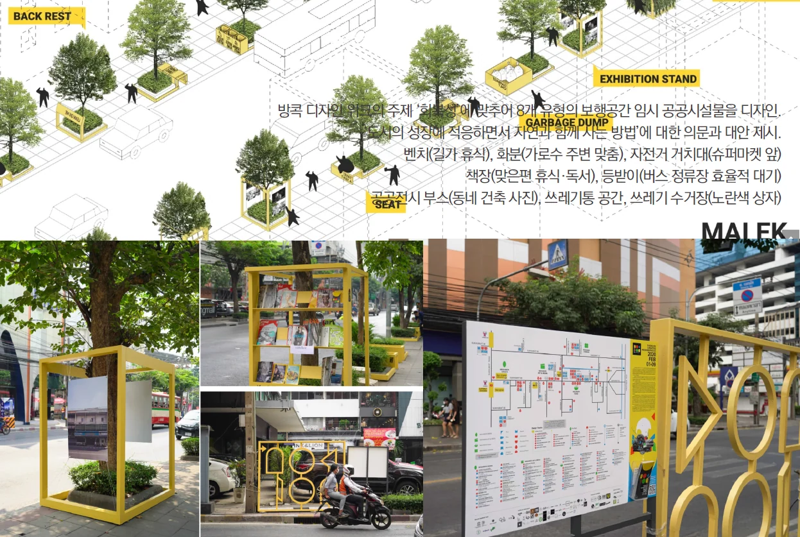
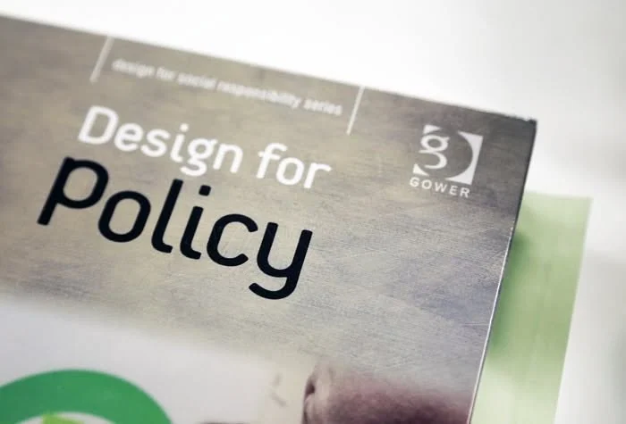
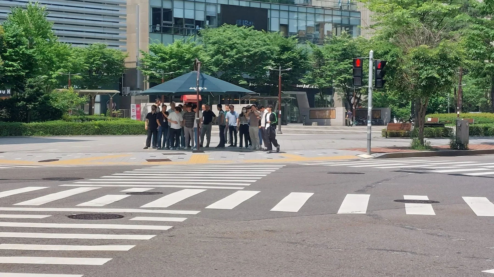
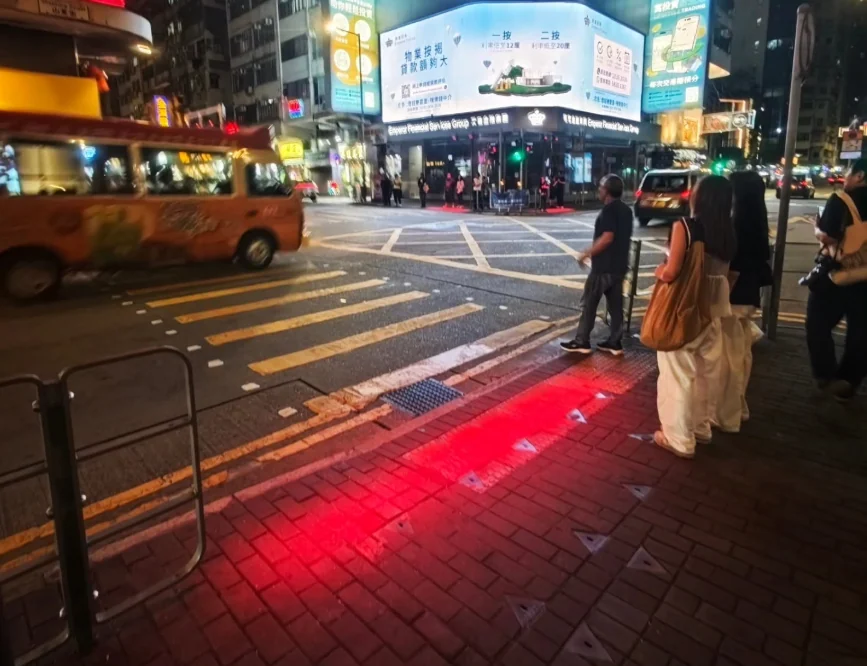
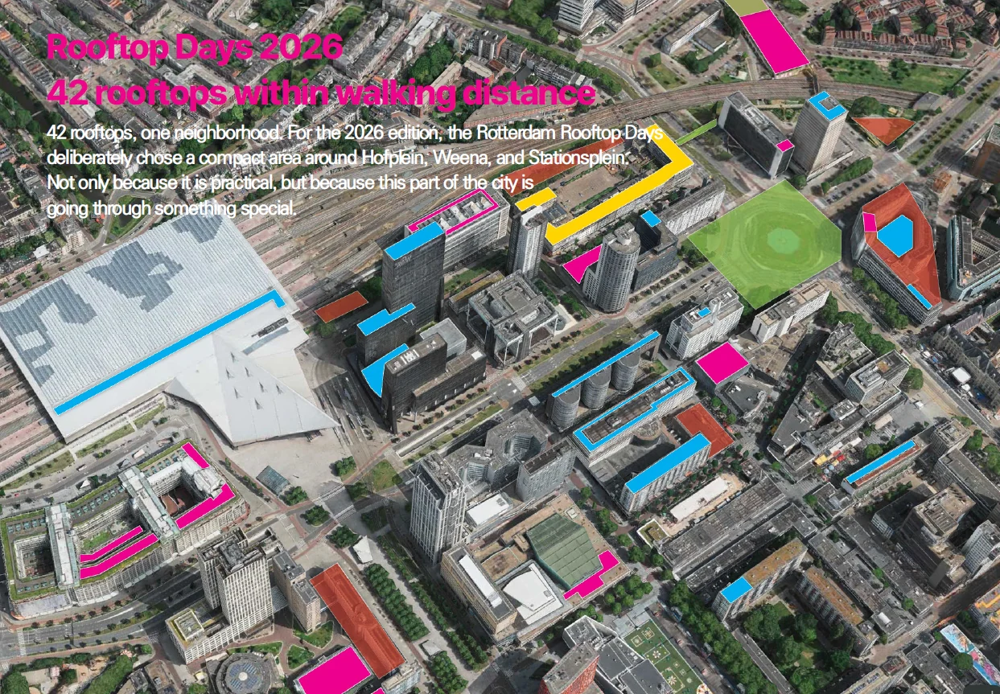
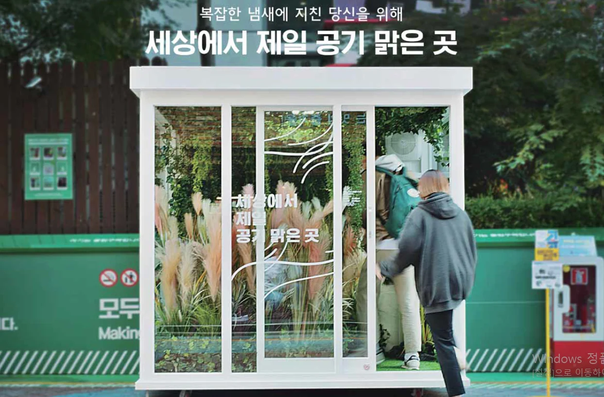
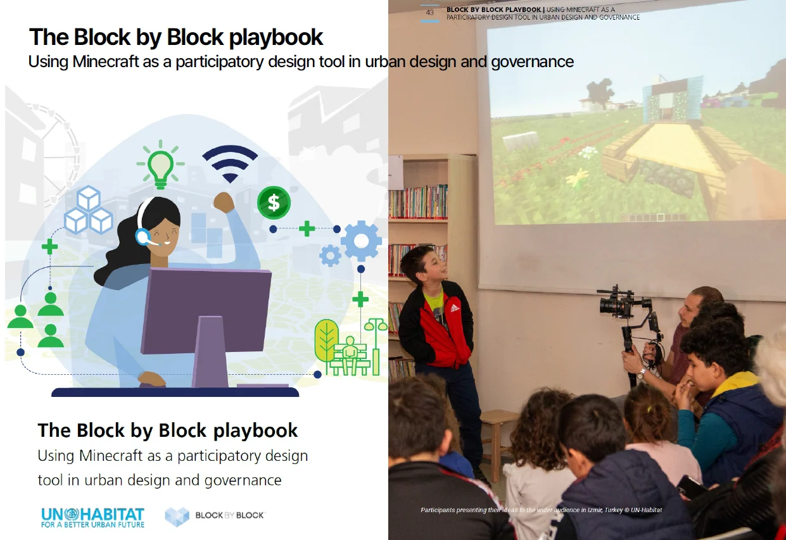
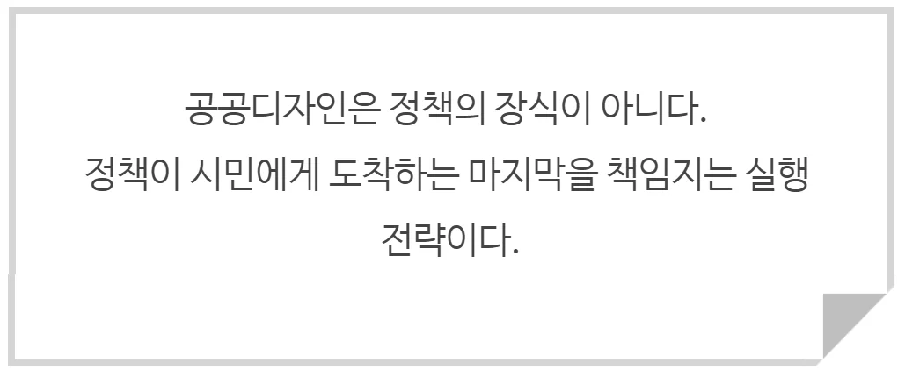

정책을 위한 공공디자인
공공디자인 뉴스레터The Public Design365,
기획109. [정책x공공디자인]
정책을 위한 공공디자인
공공영역에서 정책의 실행
정책학에는 '집행 격차(implementation gap)'라는 개념이 있다. 이 개념은 정부나 조직이 세운 훌륭한 정책이나 계획이 실제 현장에서 제대로 실현되지 못하고 예상치에 다다르지 못하는 현상을 뜻한다. 미국의 실업 대책이 예산과 법적 근거를 모두 갖추고도 현장에서 효과를 거두지 못한 채 좌초하는 과정을 추적한 연구를 통해, 정책의 성패가 '결정'이 아니라 '집행'에서 결정적으로 좌우된다는 사실에 근거하여 형성된 개념이다.
집행격차에 대해 마이클 립스키(M. Lipsky)는 1980년 저서 ‘일선관료제(Street-Level Bureaucracy)’에서 시민들이 직접 경험하는 정책의 실질적 실효성은 서류상의 공식적 정책이 아니라 일상 현장의 상호작용과 수요자의 경험, 참여에서 결정된다고 하였다.
즉, 정책이 실효성을 가지려면 현장의 참여, 상호반응 할 수 있는 무엇인가가 있어야 한다는 것이다.
지난 편에서 살펴본 제9회 지방선거 당선인 공약 1,190건의 분석에서도 공약은 "무엇을 지을 것인가"까지는 분명하게 규정했지만, 그것이 "어떻게 보이고 경험하고 만들어지는가"에 대해서는 체감적으로 알 수가 없었다. 문제는 시민이 정책을 만나는 자리가 대부분 공백으로 비어있다는 것이다. 시민은 조례를 읽고 재정을 알고, 조직을 바라보며 정책을 체감하지 않는다. 횡단보도 앞의 의자, 골목의 조명, 안내판의 글자 크기, 그늘 쉼터 등 내가 체감하는 공공영역에서 정책의 발현을 경험하고 느낀다.

시민의 눈눞이에서 체험가능한 디자인 요소들 방콕디자인위크 (c) 방콕 Mai-Ek 프로젝트
전통적으로 정책수단은 예산·규제·조직·법률 등으로 구현되어 왔는데, 복잡해지는 사회 속에서 공공이 더 체감할 수 있는 정책을 위해서는 계획-제도-재정이라는 3축 위에, 그리고 집행격차를 줄이기 위한 실행 축이 함께 유기적으로 돌아가야 효과적이지 않을까? 공공디자인은 여기에 참여, 실험, 검증, 체감하는 효과적인 방법으로 활용될 수 있는 ‘실행’ 축이 될 수 있다. 안전한 공원을 조성할 것인가 말 것인가는 법률이나 계획, 예산에 따라 결정되지만, 그 공원에 어떤 요소들이 불안한 요소인지 찾고 검증하고 시민들에게 직접적으로 안전을 체감하게 하는가는 사실 직접 공원 안에서 인지할 수 있는 요소들에 대한 디자인이 결정한다.
디자인이 정책에 개입하는 방식은 크게 둘로 나뉜다.
하나는 정책을 만드는 과정에 디자인 방법을 적용하는 것이다. 영국 정책랩(UK Policy Lab, 2014), 덴마크 마인드랩(MindLab, 2002~2018), 핀란드 시트라의 헬싱키 디자인랩(2008~2013), 국내의 국민디자인단(2014~2025)이 여기에 해당한다. 공무원과 디자이너, 시민이 한 테이블에 앉아 정책의 문제를 다시 정의하고 대안을 함께 설계한다. 이른바 정책을 만드는 디자인 - '정책디자인(Policy by Design)'이다.
다른 하나는 이미 결정된 정책을 구체화하고 실현하는 과정에 디자인을 전략과 수단으로 투입하는 것이다. 예산과 명분이 확보된 사업이 어떤 형태로 시민 앞에 놓일지, 경험하게 할지, 의견을 묻도록 검증할지를 실행하는 일. 즉, 정책을 구현하는 디자인-'정책을 위한 디자인 (Design for Policy)'이다.

(c) Design for policy Edited by Christian Bason
공공디자인의 전략적 활용을 위해서 이러한 구분은 중요하다. 전자가 '정책이 무엇을 할 것인가'를 다룬다면, 후자는 '정책이 무엇으로 작동하는가'를 다루기 때문이다. 그리고 위에서 얘기한 ‘집행 격차’의 이론에 따르면 정책이 가장 자주 실패하는 지점은 후자-무엇이 상호작용하고 작동하는가 -이다.
기존의 관점에서 디자인을 해석하기보다 다양한 정책적 활용을 위해 전략적인 수단으로 활용하는 디자인의 역할을 새롭게 구성하는 것이 중요하다.
공공디자인이 정책 구현의 수단으로 적합한 이유는 디자인이 원래 가지고 있던 성질에서 나온다. 이를 다섯 가지로 살펴본다.
첫째, 구현성 ― 정책을 직접 보이게 만든다.
디자인의 첫 번째 특질은 기획과 구현이 따로 떨어져 분절되지 않는다는 점이다. 디자인은 초기부터 무형적 아이디어가 곧바로 유형적인 형태로 실시간 번역되듯이 연계되는 특성이 있어서, 실현 가능성이 기획 단계에서 선제적으로 구체화되고 공유되기 쉽다. ‘집행 격차’를 줄이기 위해서는 정책 목표의 설정과 집행 수단의 결정을 시차를 두고 분리하기 보다는 목표와 수단을 하나의 사고 과정 안에서 왕복시키는 것이 유리한데 ‘디자인’의 속성이 이를 지원할 수 있다. 특히 공공디자인의 산출물은 대부분 공간이고 시설이고 매체다. 예를 들어 '폭염 대응'이라는 정책 목표는 추상적이지만, 건널목에 세워진 ‘폭염 방지 그늘막’은 구체적이고 매우 체감적이다. 정책이 텍스트에서 형태로 번역되는 순간, 그 정책은 비로소 체감되면서 시민에게 존재하기 시작한다.

폭염 대응의 정책을 체감할수 있는 '폭염방지 그늘막'
둘째, 체감성 ― 사람이 직접 체감가능한 영역을 바꾼다.
디자인은 인간이 인식할 수 있는 범위 내에서 - 즉, 만지고 걷고 보고 듣는 인지 영역 안에서 체감할 수 있는 요소-로 구현된다. 그래서 디자인은 인간에게 내재된 인식과 생리적 특성을 이용해 지각과 행동을 유도하는 '무의식의 언어'로 작동하여 효과를 보는 경우가 많다. 소위 도시 계획시 조감도라는 것은 새의 눈으로 본 도시의 형태를 구현하지만 대부분의 공공디자인은 사람의 눈높이에서 보이는 부분을 그린다. 거의 모든 공공디자인이 사람의 활동 반경 안에서 이루어진다. 이는 ‘작은 스케일을 다룬다’기보다 ‘가까운 스케일’을 다룬다고 볼 수 있다. 왜냐하면 크기의 문제가 아니라 체감의 정도이기 때문이다. 이러한 이유로 디자인은 형태를 구현하는 방향에서 형태를 체감하는 사람의 행태를 만드는 디자인으로 다양한 효과를 본다. 도로의 안전을 위한 스몸비 건널목 디자인은 보행자가 체감할 수 있는 영역 안에서 안전을 위한 바닥 조명을 설치함으로써 보행자 안전 행태를 만들어낸 공공디자인이다.

건널목 안전 정책을 위해 실험중인 홍콩의 바닥 신호등 디자인
셋째, 임시성 ― 짓기 전에 시험하고, 결정 전에 보여준다.
정책은 통상 계획–예산–집행에 수년이 걸리지만, 디자인 프로토타입은 며칠에서 몇 주 단위로 현장에 설치하고 반응을 수집한다. 도시계획 편의시설 하나를 지정하여 공간에 설치하기 위해서는 다양한 계획과 제도의 과정을 거쳐야 하지만 통합세대 벤치 하나, 읽기 쉬운 사인 하나는 임시성을 기반으로 다양한 규제를 피해 설치하여 복지와 배려의 정책 효과성을 시험해 볼 수 있다. 디자인을 통해 대규모 예산이 투입되기 전에 작게 만들어 보고, 시민의 반응을 확인한 뒤 확산하므로 시행착오의 비용이 결정적으로 낮아진다.

옥상 틈새공간의 활용을 위한 임시적 실험 프로젝트 '루프탑데이' (c) Rotterdamse Dakendagen
넷째, 효율성 ― 작게 실험하고, 증거로 확산한다.
영국이 행동통찰팀(BIT)을 설립하고 What Works Network를 가동하며 증거기반 정책(EBPM)을 구현한 사례나 세금 납부율 제고, 에너지 절약 같은 과제에 넛지 설계를 적용하고 그 효과를 무작위 대조 실험으로 측정한 뒤, 검증된 솔루션만 선별하여 공무원용 툴킷으로 배포한 경우들이 그 사례이다. 이러한 증거기반의 정책 구현에 있어 디자인은 '효과가 증거로 입증된 것만 확산한다'는 원칙에 부합하는 매우 효율적인 수단이 된다. 국내에서는 강남구에서 2019년부터 공공디자인 진흥계획을 통해 추진한 ‘공공디자인 실험실’ 이 대표적 사례인데, 담배꽁초로 지저분한 거리를 깨끗하게 만드는 정책, 거리 흡연을 줄이는 정책, 고령자가 많이 거주하는 공동주택의 안전을 향상시키는 정책에 ‘공공디자인 실험실’의 파일럿 디자인 프로젝트를 가동하여 효과성을 검증하고 확산하는 방법을 지금까지 정책의 한 수단으로 시행하고 있다. 디자인을 통해 정성적 공간에서의 경험을 통한 개선이 정량적 개선 결과로 제시됨으로써 정책 실현의 효과성을 향상시킨다.

상습적 거리 흡연공간을 줄이기 위한 정책 (c) 강남구 공공디자인 실험실
다섯째, 공유성 ― 만족은 과정에서 온다.
공공디자인 진흥법 제2조에 명시되어 있듯이 공공디자인은 결과물의 형태에 국한되지 않고 과정 자체(기획·분석·운영·관리 등)를 포함한다. 정책의 공급자와 수요자가 함께 공유할 수 있는 과정을 디자인하면, 정책의 실질적 효용성과 이해도가 함께 올라간다. 이는 곧 ‘집행 격차’를 줄이는 가장 핵심적 요소이다. UN-Habitat와 마이크로소프트가 운영한 'Block by Block'은 마인크래프트를 매개로 청소년과 여성 등 그동안 설계 의사결정에서 배제되어 온 집단을 공공공간 설계에 참여시켰다. 또한 국내의 다양한 공공디자인 리빙랩은 공공영역의 문제점을 함께 찾고 해결책까지 공유함으로써 사업 결과물의 만족도를 과정 공유를 통해 높이는 훌륭한 방법론이 되었다. 완성된 디자인 결과만 통보받은 정책은 이해도를 떨어뜨리고 ‘공급받는 자’의 권리를 강화시켜 간혹 저항을 부르지만, 디자인을 통해 과정에 참여한 정책은 함께 공유한 결과로 ‘공급하는 자’의 마인드로 옹호자를 만든다. 시각화된 디자인 안(案)은 과정을 담은 안(案)과 함께 이해관계자 사이의 공통 언어가 된다.

참여디자인을 위한 마인그레프트 활용 The Block by Block playbook (c) UN-Habitat
의사는 진단과 처방, 임상이라는 과정을 통해 건강 개선이라는 목표에 이른다. 이때 음식 전문가가 '같은 목표를 음식으로 구현하는 효과적인 방법'을 의사와 공유한다면, 의사는 훨씬 입체적이고 다각적인 경로로 그 목표에 도달할 수 있다. 음식 전문가는 의사를 대체하지 않는다. 진단을 대신하지도 않는다. 다만 처방이 실제 식탁 위에서 실질적으로 작동하도록 지원한다.
공공디자인과 정책의 관계가 이와 같다. 디자이너는 정책을 대신 만들지 않는다. 다만 결정된 정책이 시민의 일상에서 실제로 작동하도록 만든다. 그 작동이 시민이 직접 체감할 수 있는 영역에서 구현되기 때문에 디자이너가 정책의 목표와 이유를 정확히 이해해야 한다. 그래서 정책을 위한 디자이너의 역할은 원작을 읽는 사람의 언어와 수준으로 옮기는 번역과 같다. 정책의 언어를 디자인의 언어로 옮기고, 정책의 목표를 공간과 매체의 형태로 옮기는 일. 정책가가 이해할 수 있게 설명하고, 함께 판단할 수 있는 근거를 제시하는 일. 수요자인 시민이 체감하는 시설과 공간, 매체로 만드는 일, 공공디자인이 더 공공스러워질 수 있도록 지금 이 시기의 디자이너에게 요구되는 역할이 바로 그것이다.

이 글의 판본과 수록 정보 ＋
집필 폴더의 자료; 실제 작성자·집필 기여 미확정
초고·윤문본. 파일 기획108과 본문 기획109 표기가 달라 회차 확인 필요.
- 수록 자료
- 기획108_정책을위한공공디자인_윤문본.docx
- 자료의 날짜 단서
- 2026-08-12 · 실제 발표일과 다를 수 있습니다.
- 관련 파일
- 5개 / 서로 다른 본문 3종